Proyecto de Ideo Maker
Liceo Fernando Ariztía Ruiz de Paipote
Un Aula Maker STEM para el liceo técnico-profesional más grande de la región de Atacama: de taller de artes deteriorado a aula de fabricación digital, robótica y realidad virtual.
Este es un proyecto de Ideo Maker, hecho por su equipo. Aquí muestro la parte en que participé.

Un Aula Maker STEM para el Liceo Fernando Ariztía Ruiz, en Paipote, Copiapó, el liceo técnico-profesional más grande de la región de Atacama, con más de 1.500 estudiantes. Es parte de MakerSTEM, un proyecto de Fundación Chile con Assist International y la Fundación Caterpillar, que se lanzó en abril de 2026. Ideo Maker ejecutó el aula completa, desde el levantamiento y el co-diseño hasta la capacitación de los docentes.
01Mi rol
- Presupuestos, carta Gantt y logística
- Habilitación en terreno: armado e instalación del mobiliario
- Capacitación docente en las tecnologías del aula
- Redacción de los informes del proyecto
Equipo Ideo Maker
- Sebastián Higuera
- Patricia Ramírez
- Vicente Cáceres
- Elvis Andrade
- Nelson Mora
- Julio Higuera
- Diego López
02El punto de partida
La sala asignada era un antiguo taller de artes, en avanzado estado de deterioro: el suelo en malas condiciones y tanto mobiliario acumulado que no se podía recorrer entera para medirla. A favor tenía superficie, estructura sólida, luz natural, conexiones eléctricas y salida directa a un patio.

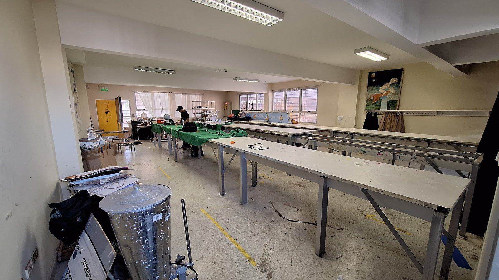

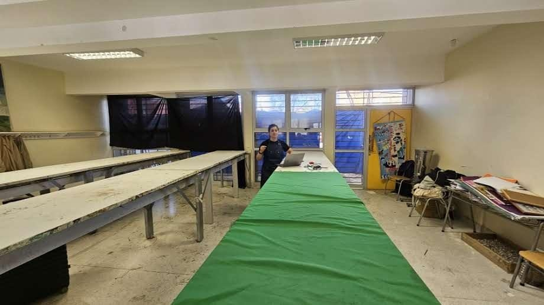
03El co-diseño
El diseño partió de una entrevista con el equipo directivo, una feria maker con encuesta a estudiantes y un focus group con docentes. De ahí salió la zonificación: mesas modulares de trabajo colaborativo al centro, zonas diferenciadas por tecnología y el patio como zona de pruebas para robótica móvil y de espera mientras corren la impresión 3D o el corte láser.

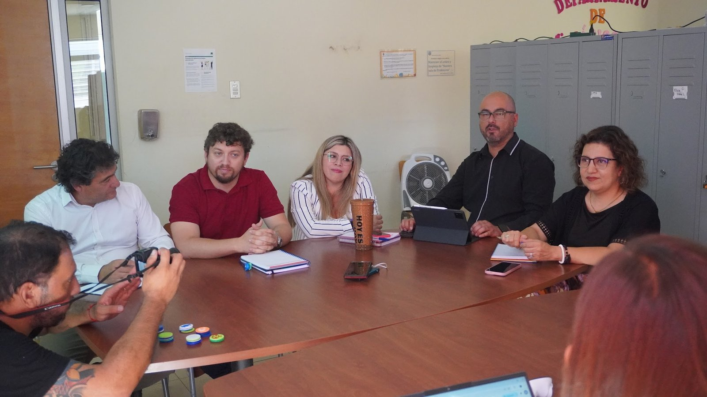

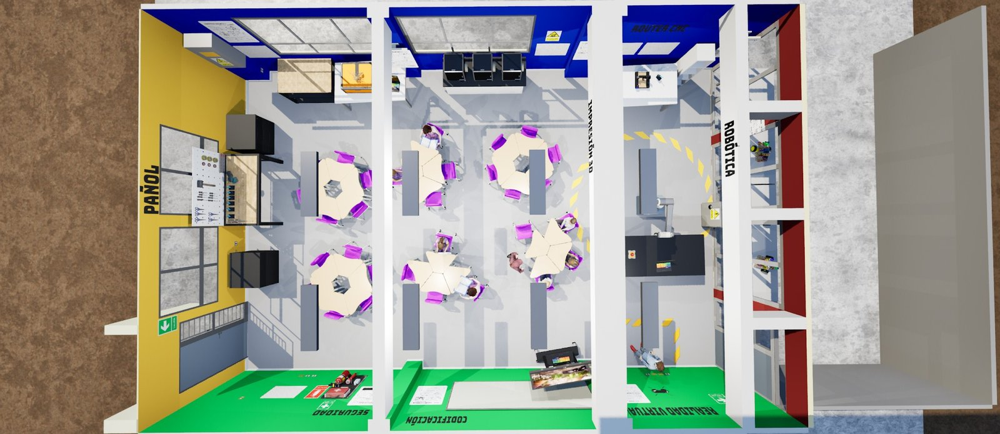

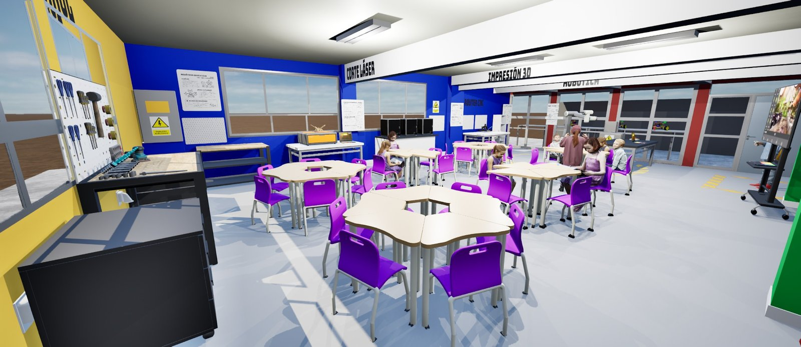

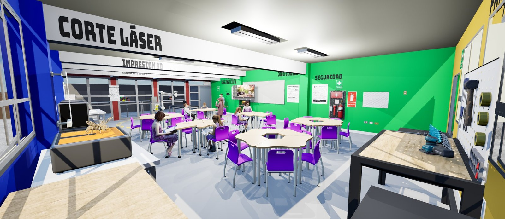

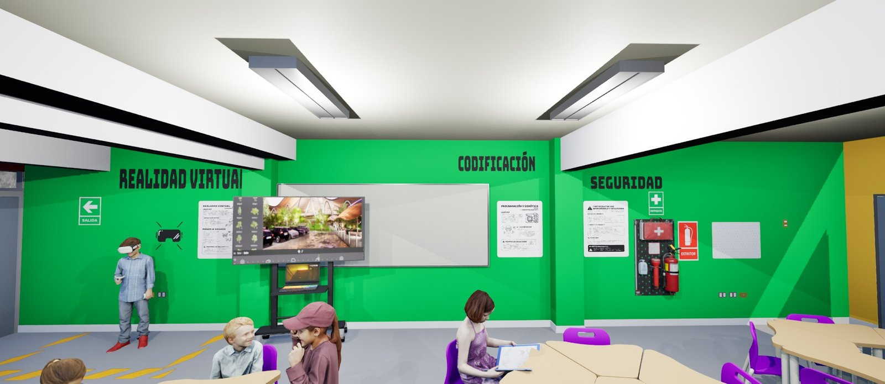

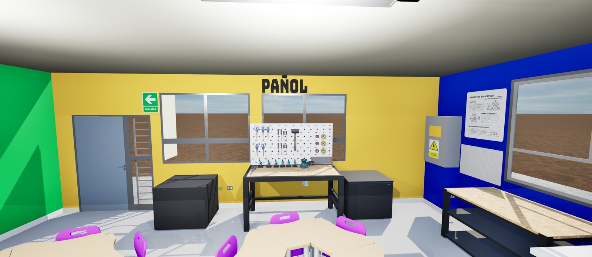
04La habilitación
El proyecto sumó obras de infraestructura, instalación eléctrica, muros, pavimento, señalética y seguridad a la instalación del mobiliario y los equipos. El recinto quedó con las zonas de trabajo diferenciadas, la circulación ordenada y listo para empezar la capacitación docente. El propio liceo, junto a sus estudiantes, recuperó el patio contiguo.

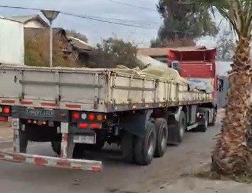

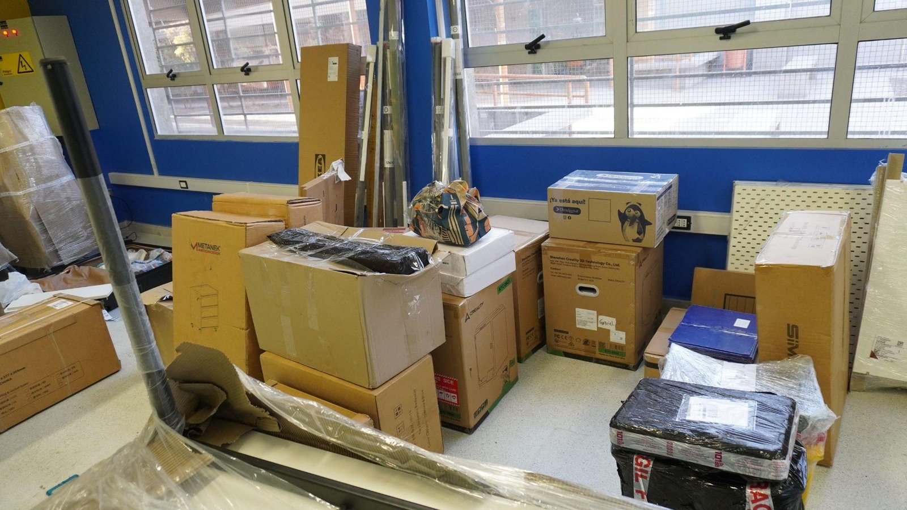

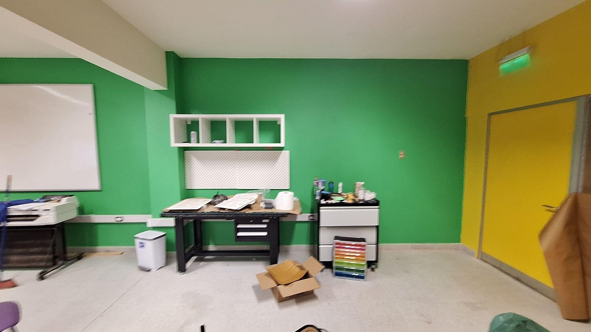

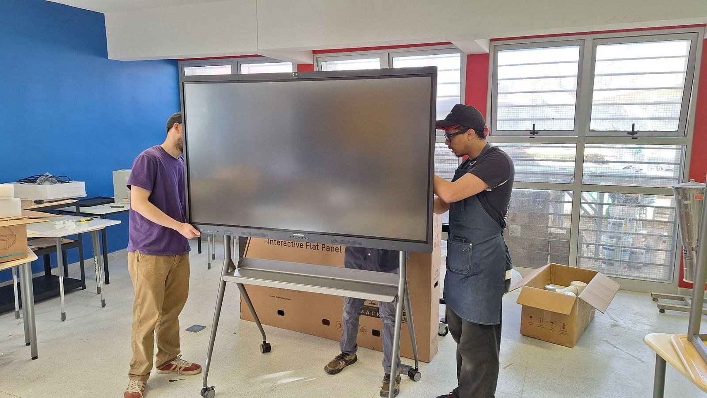

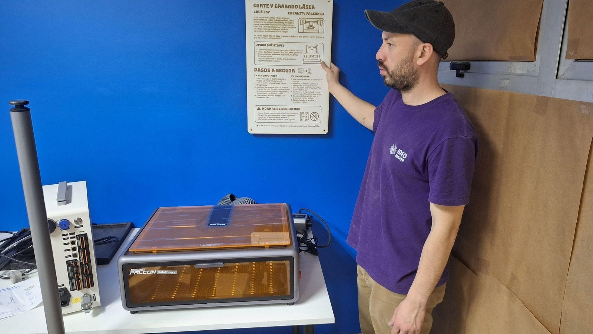

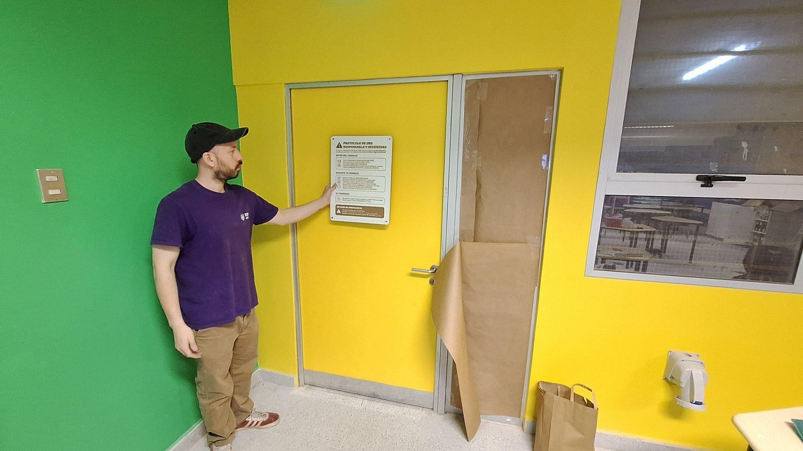

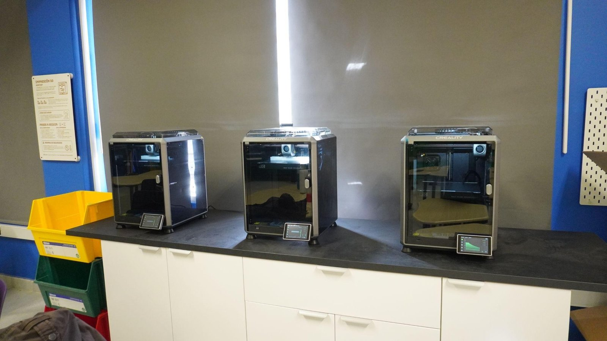

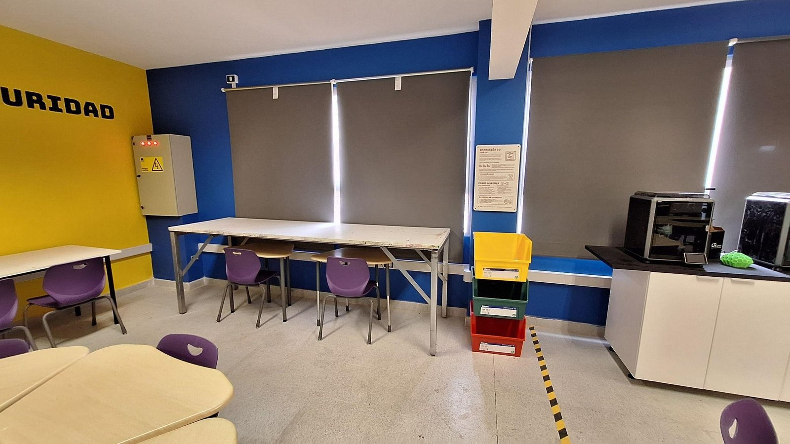
05El lanzamiento
MakerSTEM se lanzó en abril de 2026 con autoridades regionales, Fundación Chile, Assist International y la Fundación Caterpillar.

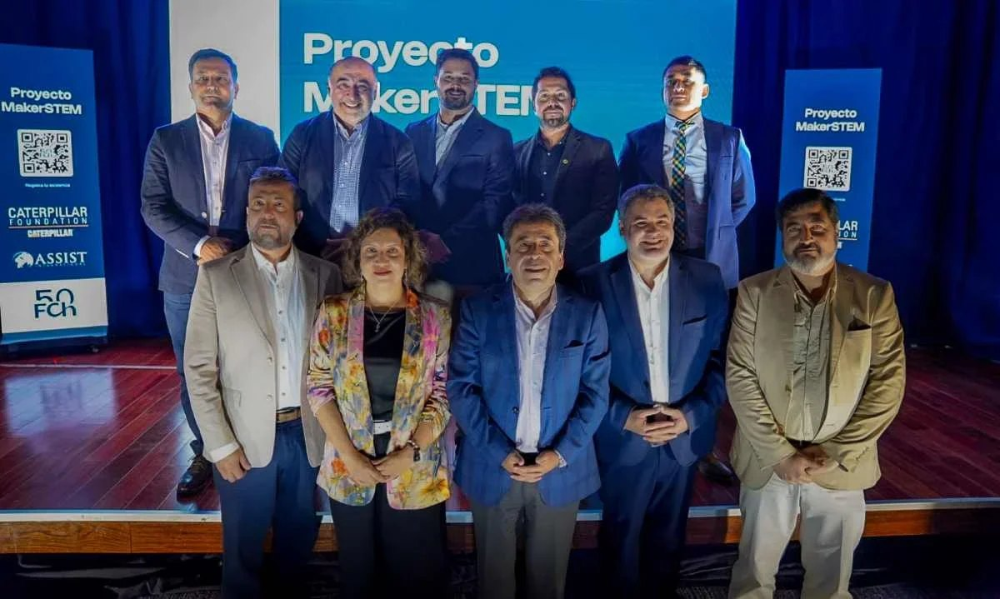
06La inauguración
El aula, la primera Aula MakerSTEM de la región, se inauguró el 1 de septiembre de 2026 con autoridades regionales, el ecosistema educativo y el sector productivo. Son más de 100 m² remodelados, con robótica, prototipado, programación y realidad aumentada, y seguirá con acompañamiento pedagógico y formación docente.

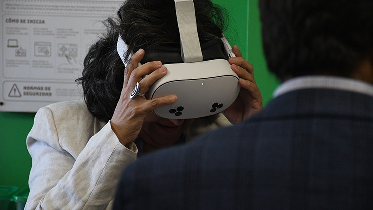